7030H15 HOOD CLOTH - R.R.
- Path
- Procedures > 70 FITTINGS > 7030 SUN ROOF/GLASS PANEL > 7030H AUTOMATICALLY OPERATED HOOD > 7030H15 HOOD CLOTH - R.R.
- Kind
- repair procedure (removal / refitting; the operation number is the code)
- Applies to
- engines: 2.2 JTS, 3.2 JTS; all production periods
- Interactive page
- https://sloeber94.github.io/elrnDB-aBrrSpdr/en/#/946003665
Applies to: engines: 2.2 JTS, 3.2 JTS; all production periods
 Removing
Removing
 Refitting
Refitting- Prepare the hood for the procedure.
Op. 0010T79 HOOD HYDRAULIC SYSTEM - DISCHARGE AND RESTORE PRESSURE
- Raise the rear part of the hood.
1. Release frame (1a) for the hood inner lining from retainers (1b) for upper profile (1c) of heated rear windscreen (1d).
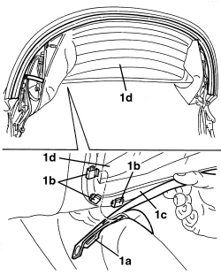
Applies to: engines: 2.2 JTS, 3.2 JTS; all production periods
1. Manually raise the upper part of heated rear windscreen (1a) and uncover hoop (1b).
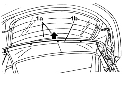
Applies to: engines: 2.2 JTS, 3.2 JTS; all production periods
1. Using a drill, remove rivet (1a) securing end of return spring. (Keep the removed parts of the rivet).
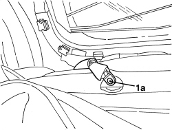
Applies to: engines: 2.2 JTS, 3.2 JTS; all production periods
Removing
Refitting- Place protective cloths on the vehicle fittings and bodywork.
Op. 7030H21 HOOD INNER LINING - R.R.
Op. 7030H39 HOOD REAR SEAL - R.R.
1. Disconnect heated rear windscreen electrical connections.
Description | Connector | |
|---|---|---|
1 | HEATED REAR WINDSCREEN |
2. Drill out rivets (2a) securing rear drip channel (2b) (recover removed rivets).
3. Detach rear drip channel (2b) from main hoop.
4. If necessary, withdraw rear drip channel (2b) from hood canvas lining strip (4a), working with the aid of a second mechanic.
- Lower rear part of hood.
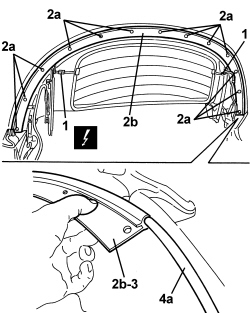
Applies to: engines: 2.2 JTS, 3.2 JTS; all production periods
1. Manually lower the rear of the hood by about 40cm, then raise it again, in order to allow rear windscreen (1a) to go in front of the hoop.
2. Release the retaining clips.
3. Remove the return spring assembly.
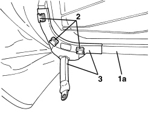
Applies to: engines: 2.2 JTS, 3.2 JTS; all production periods
Op. 7030H20 HOOD FRONT PANEL - R.R.
- Remove left-hand and right-hand side seals.
Op. 7030H37 SEAL (ONE), LEFT OR RIGHT, HOOD SIDE SEAL - R.R.
1. Working from both sides of the hood, drill out rivets (1a) securing side drip channels (1b) and (1c).
2. Recover front side drip channels (1b).
3. If necessary, withdraw rear side drip channels (1c) from hood canvas lining strip (3a).

Applies to: engines: 2.2 JTS, 3.2 JTS; all production periods
Refitting
Removing- Check that the return spring is not damaged.
- Position the return spring.
1. Attach new retaining clips (1a).
If necessary, use tool (1b) to avoid damaging the springs, during insertion.
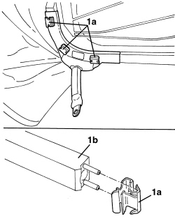
Applies to: engines: 2.2 JTS, 3.2 JTS; all production periods
1. Working inside the hood canvas, drill out rivets (1a) and recover through shanks (1b) (recover removed rivets).
2. Disconnect adhesive edges (2a) (2b) (2c) from their respective hoops (2d) (2e) (2f).
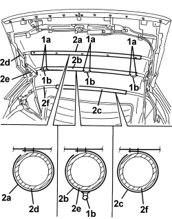
Applies to: engines: 2.2 JTS, 3.2 JTS; all production periods
- Manually bring the heated rear windscreen behind the hoop.
1. Apply rivet (1a) securing the end of the return spring.

Applies to: engines: 2.2 JTS, 3.2 JTS; all production periods
1. Check the integrity of retainers (1a). Attach frame (1b) to retainers (1a) along the upper part of the heated rear windscreen.
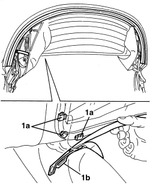
Applies to: engines: 2.2 JTS, 3.2 JTS; all production periods
1. Working from both sides of the hood, disconnect the hood canvas adhesive edges (1a), until it is possible to work on retainers (1b) for side link front terminals (1c).
2. Open retainers (1b) slightly and disconnect front terminals (1c).
3. Disconnect side link rear terminals (3a).
4. Remove side links (4a), detaching them from hood canvas (4b) and rings (4c).
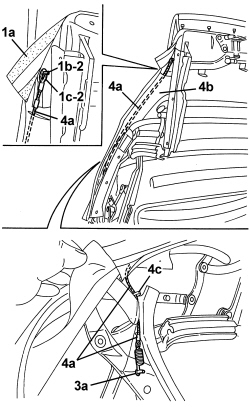
Applies to: engines: 2.2 JTS, 3.2 JTS; all production periods
- If discharged, restore the hood hydraulic system pressure.
Op. 7030H03 HOOD MANUAL OPENING FOLLOWING DEACTIVATION OF HYDRAULIC SYSTEM - CARRY OUT PROCEDURE
- Check that the hood is working correctly.
Applies to: engines: 2.2 JTS, 3.2 JTS; all production periods
1. Open retainers (1a) and lift front straps (1b) from the hood canvas.
2. Completely detach adhesive side edges from the hood canvas.
3. Remove the hood canvas.
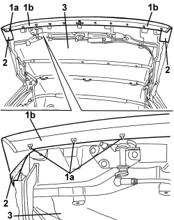
Applies to: engines: 2.2 JTS, 3.2 JTS; all production periods
Refitting
Removing1. Check that hood canvas (1a) is not damaged. In particular check that heated rear windscreen (1b) is working correctly.
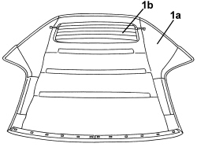
Applies to: engines: 2.2 JTS, 3.2 JTS; all production periods
- Restore surface protection to metal parts, which may have been damaged when rivets were removed, etc.
1. Position the hood canvas.
2. Position edges (2a), without gluing them.
3. Attach hood canvas front straps (3a) to retainers (3b). Close retainers (3b).
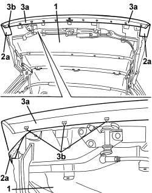
Applies to: engines: 2.2 JTS, 3.2 JTS; all production periods
1. Working from both sides of the hood, position side links (1a), attaching them to rings (1b) and to hood canvas (1c).
2. Connect side link rear terminals (2a).
3. Connect front terminals (3a) and close retainers (3b).
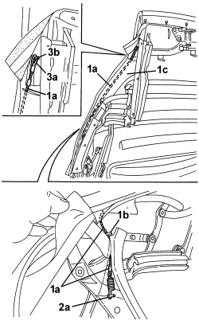
Applies to: engines: 2.2 JTS, 3.2 JTS; all production periods
- Raise the rear part of the hood.
1. If it was removed, slide rear drip channel (1a) into hood canvas lining strip (1b) with the help of a second mechanic.
2. Position rear drip channel (1a) on the main hoop.
3. Apply rivets (3a) securing rear drip channel (1a) to the main hoop.
4. Connect heated rear windscreen electrical connections.
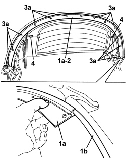
Applies to: engines: 2.2 JTS, 3.2 JTS; all production periods
1. Working from both sides of the hood, slide rear side drip channels (1a) into hood canvas lining strips (1b) (if they were removed).
2. Position rear side drip channels (1a) and secure them with rivets (2b).
3. Position front side drip channels (3a) and secure them with rivets (3b).

Applies to: engines: 2.2 JTS, 3.2 JTS; all production periods
1. Close the hood completely and correctly apply adhesive edges (1a) (1b) (1c) to their respective hoops (1d) (1e) (1f).
Check that the hood canvas is at the correct tension.
2. Glue adhesive edges (1a) (1b) (1c) to their respective hoops (1d) (1e) (1f), taking care not to pull the selvages or create wrinkles.
If the removed canvas is to be re-used, restore adhesive areas using bodywork bi-adhesive strip (if necessary).
3. Position through shanks (3a) and apply rivets (3b).
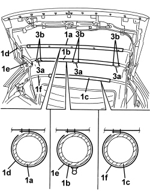
Applies to: engines: 2.2 JTS, 3.2 JTS; all production periods
1. Working from both front sides of the hood, position and glue hood canvas adhesive edges (1a), without creating wrinkles. If the removed canvas is to be re-used, restore adhesive areas using bodywork bi-adhesive strip (if necessary).
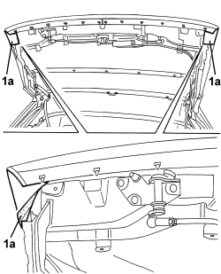
Applies to: engines: 2.2 JTS, 3.2 JTS; all production periods
Op. 7030H37 SEAL (ONE), LEFT OR RIGHT, HOOD SIDE SEAL - R.R.
Op. 7030H20 HOOD FRONT PANEL - R.R.
Op. 7030H39 HOOD REAR SEAL - R.R.
Op. 7030H21 HOOD INNER LINING - R.R.
- Check that the hood and door windows work correctly.
Topics linked from this page (7)
- 0010T79 HOOD HYDRAULIC SYSTEM - DISCHARGE AND RESTORE PRESSURE
- 7030H03 HOOD MANUAL OPENING FOLLOWING DEACTIVATION OF HYDRAULIC SYSTEM - CARRY OUT PROCEDURE
- 7030H20 HOOD FRONT PANEL - R.R.
- 7030H21 HOOD INNER LINING - R.R.
- 7030H37 SEAL (ONE), LEFT OR RIGHT, HOOD SIDE SEAL - R.R.
- 7030H39 HOOD REAR SEAL - R.R.
- P055 HEATED REARSCREEN